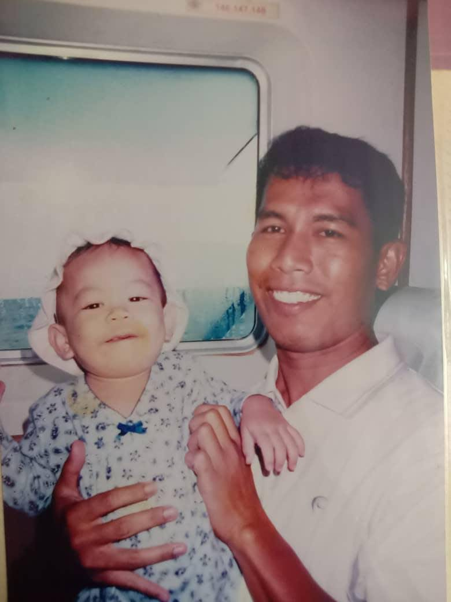
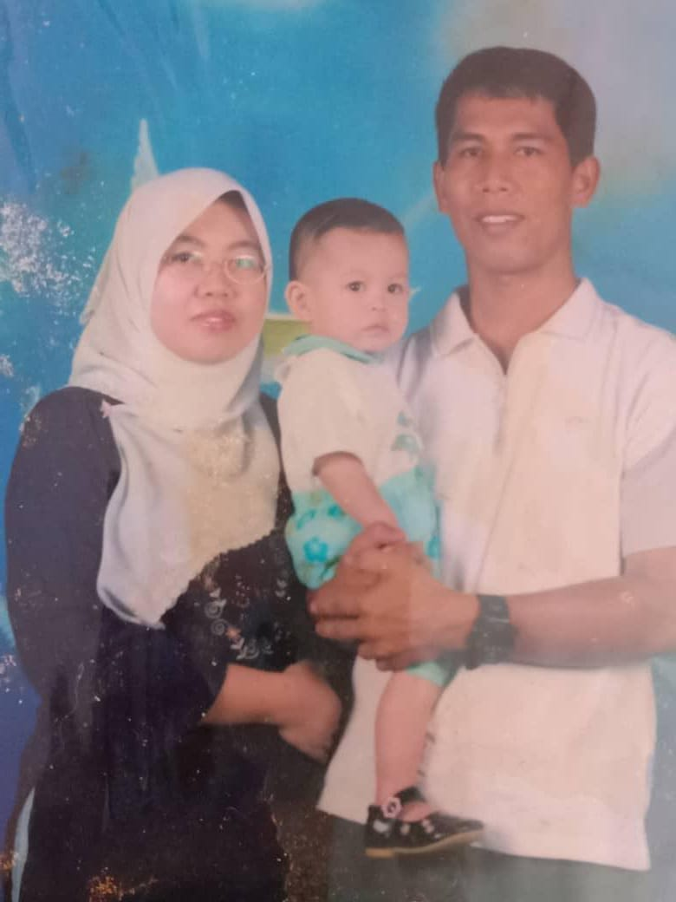
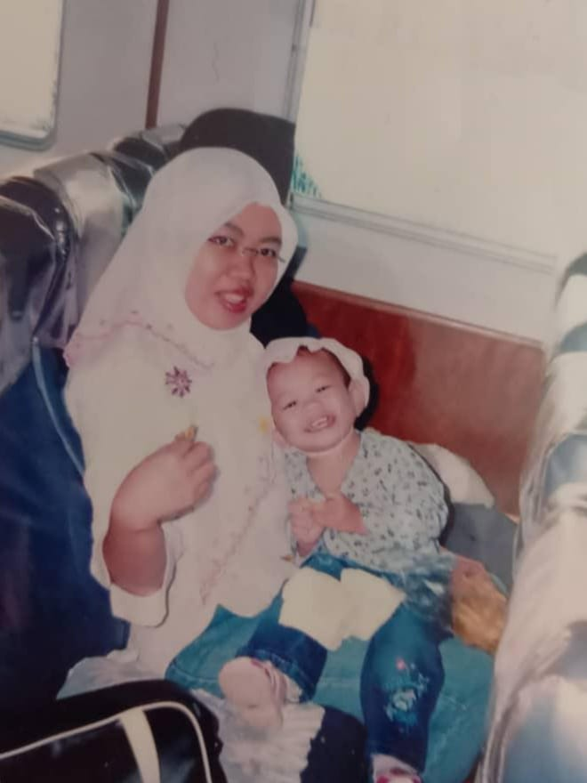
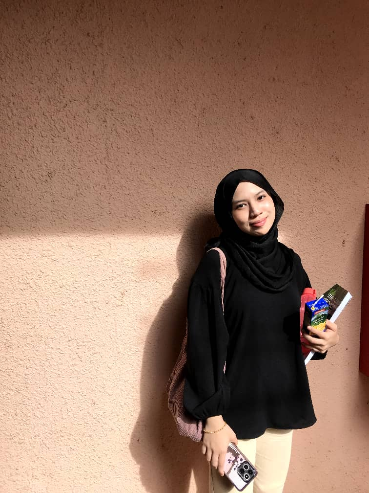
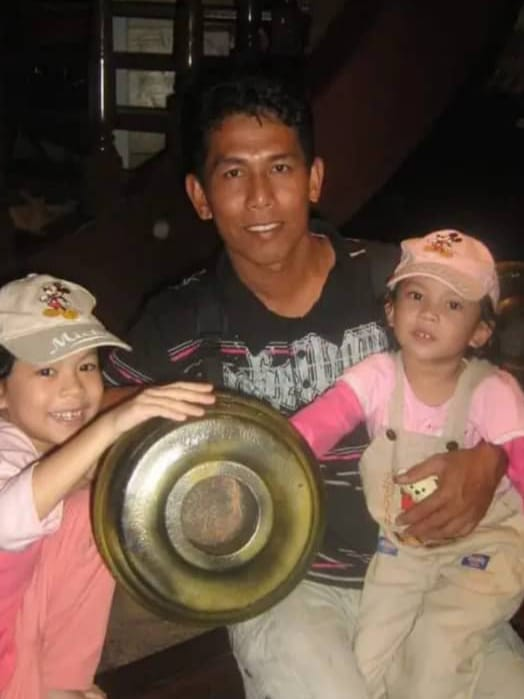
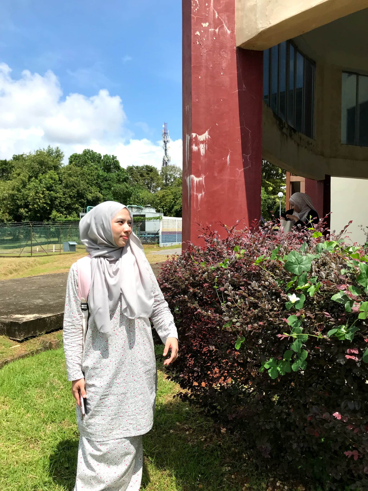

➽ My Caregivers - Abah & Mama ♥
Meet my parents, my dad's name is Mohamad Noor bin Tajudin which is my 'Abah'. He is a retired soldier who has served with honor and now taking care and supporting our family. My dad is a hardworking person and has softed heart. He loved to spend his time gardening every morning. He was borned in 7 July 1969 at Alor Setar, Kedah. In the year 2000, he decided to married my mom.
My mom's name is Masni binti Jamil which is I called 'Mama' at home. She's a dedicated nurse who's always been there to care for us. Whether it's at work or at home, she's making sure everyone is okay. She worked in Radiology Department at Hospital Sultanah Bahiyah. She was born in 11 February 1977 at Selangor. My mom liked to spend her free time with crochet hobby.



➽ My Siblings♥
Let me tell you about my only younger sister! Her name is Noor Fatihah binti Mohamad Noor. She turned 18 years old on 6 October this year. She was born at Hospital Tuanku Jaafar in Seremban. Right now, she's studying for her Diploma in Science at UiTM Arau - and doing really well. She was super active and loves sport like basketball. She loves watching her favourite YouTuber video, Nadia Omara. It's her go-to-way to relax and enjoy her hobby.

